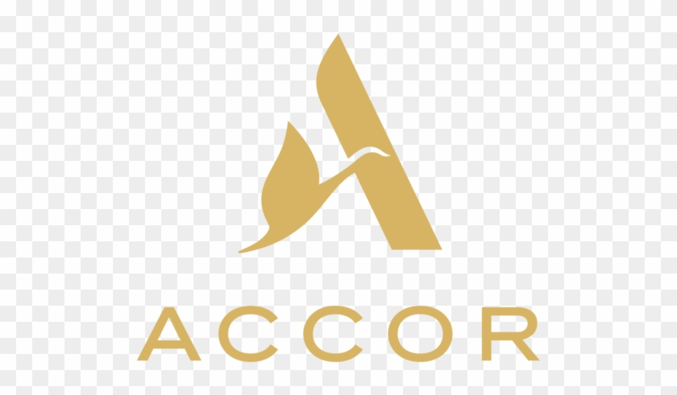

Des données… aux solutions concrètes
Avec mes compétences en Data Engineering et automatisation, je transforme les chiffres en actions mesurables et les process en gains de temps.
Expériences professionnelles

Data Quality Analyst – Accor
Septembre 2025 – Mars 2026
- Contrôle de qualité des données comptables (référentiels, codifications, doublons...)
- Vérification, nettoyage et fiabilisation des données avec Power BI, Excel et Python
- Automatisation de contrôles, de tâches récurrentes et envoi des rapports de suivi mensuels
- Création de 2 applications internes avec Python & Streamlit :
- Contrôle des identifiants utilisateurs vs périmètre autorisé
- Vérification des responsabilités métiers par profil
- Collaboration avec les équipes métiers pour identifier les anomalies et proposer des améliorations
Data Analyst - Senova Paris
Février 2024 - Mai 2024
- Conception de dashboards Power BI dynamiques pour le pilotage des performances commerciales (suivi des ventes, taux de conversion, cycle client)
- Automatisation des reportings hebdomadaires et mensuels à l’aide de Power Query, DAX et Python, réduisant les tâches manuelles de 60 %
- Structuration d’une base PostgreSQL pour centraliser les données de 3 pôles (ventes, RH, finance), facilitant les jointures et la gouvernance des données
- Création de KPIs sur-mesure pour aider les managers à anticiper les périodes de sous-performance et identifier les leviers de croissance
- Intégration de segments clients dans Power BI pour des analyses de rentabilité par profil
Développeur IA - Inoni Tech
Novembre 2022 - Juillet 2023
- Entraînement d’un modèle CNN (réseaux de neurones convolutifs) avec TensorFlow et Keras, atteignant une précision de 92 % sur les images testées
- Prétraitement des données : réduction du bruit, normalisation, augmentation des images (rotation, zoom...)
- Conception d’une application Streamlit pour permettre à des professionnels de santé d’importer des images, visualiser les résultats et obtenir une prédiction claire
- Visualisation de la performance du modèle : matrice de confusion, ROC curve, indicateurs F1-score, précision et rappel
Formation Développement Web – Seven Academy
Juillet 2021 – Avril 2022
- Apprentissage complet du développement front-end et back-end (HTML, CSS, JavaScript, PHP)
- Création d’interfaces web interactives et de dashboards esthétiques pour la visualisation de données
- Approfondissement des bases en bases de données MySQL et intégration de scripts automatisés
- Projet final : développement d’un mini-dashboard d’analyse en temps réel des ventes